A Igualdade de Gênero não é apenas um direito humano fundamental, mas a base necessária para a construção de um mundo pacífico, próspero e sustentável. A ODS 5 faz parte dos 17 Objetivos de Desenvolvimento Sustentável criados pela ONU para acabar com as discriminações contra mulheres e meninas em todo o mundo, garantindo direitos iguais na educação, na saúde, no mercado de trabalho e nas decisões políticas.
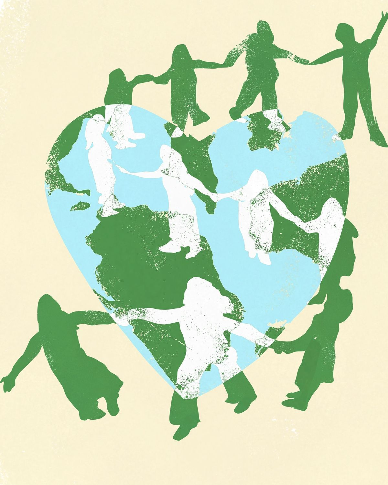
Autonomia na tomada de decisões
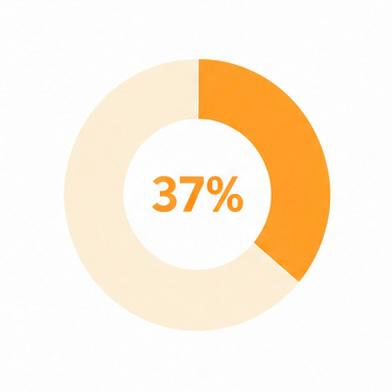
37% dos assentos nas câmaras baixas dos parlamentos nacionais dos países da região são ocupados por mulheres.
Diferença salarial entre homens e mulheres
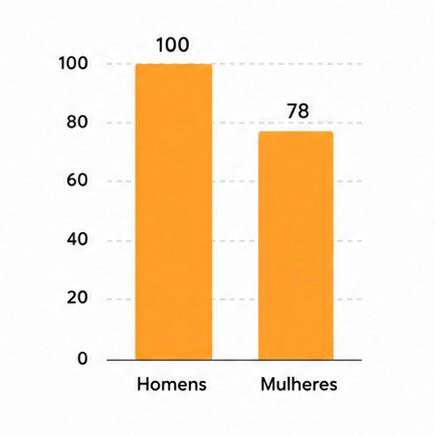
Em média, as mulheres no Brasil recebem cerca de 78% a 80% do salário dos homens, mesmo exercendo funções equivalentes e tendo, em média, maior nível de escolaridade.
Autonomia
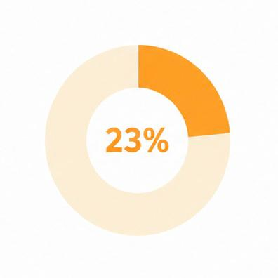
23% das mulheres da região não têm renda própria, em comparação com 10% dos homens nessa condição
Violência
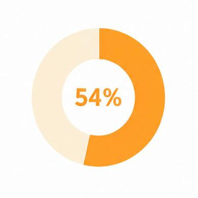
Cerca de 54% das mulheres declaram já ter sofrido algum tipo de violência (física, psicológica, moral, sexual ou patrimonial).
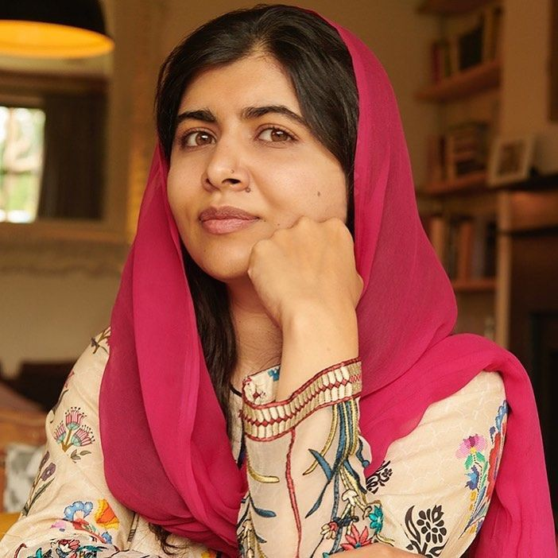
Malala relata sua experiência no Paquistão, onde meninas foram impedidas de frequentar a escola por serem mulheres. Em discurso na ONU, ela afirmou: “Não podemos todos ter sucesso quando metade de nós é impedida de avançar.” A frase mostra como a desigualdade de gênero não afeta apenas as mulheres, mas limita o desenvolvimento de toda a sociedade.
Em seu discurso na ONU, ela destacou que “nenhum país do mundo pode dizer que alcançou a igualdade entre os sexos”, chamando atenção para diferenças salariais, participação política e respeito social.
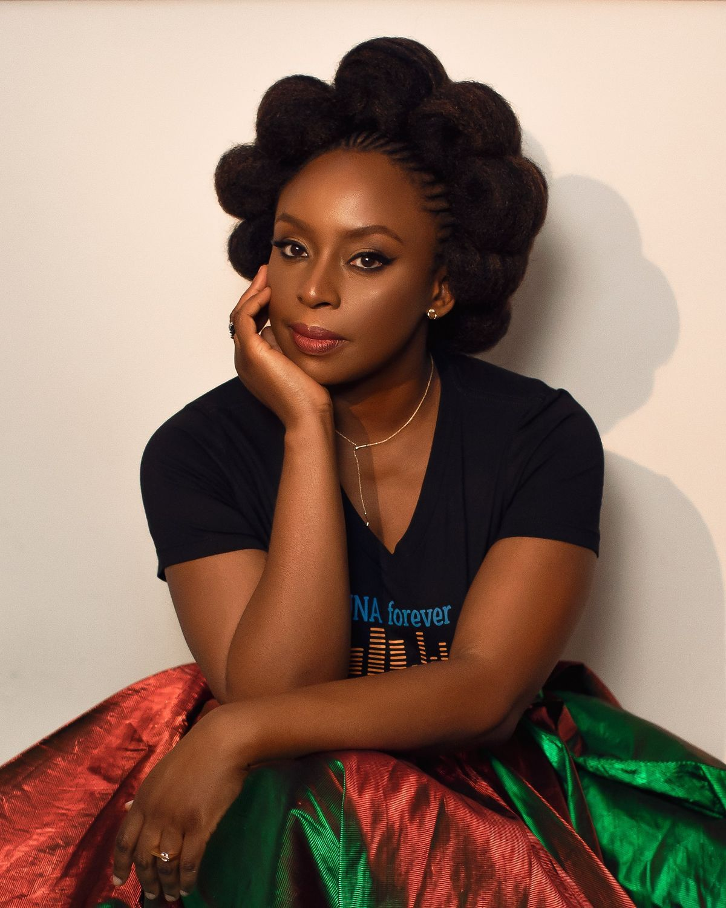
A escritora nigeriana Chimamanda Adichie, em sua palestra We Should All Be Feminists, aborda como meninas são ensinadas a controlar suas ambições para não “ameaçar” os homens. Ela argumenta que a sociedade estabelece padrões diferentes para homens e mulheres, fazendo com que mulheres sejam pressionadas a diminuir suas próprias conquistas.
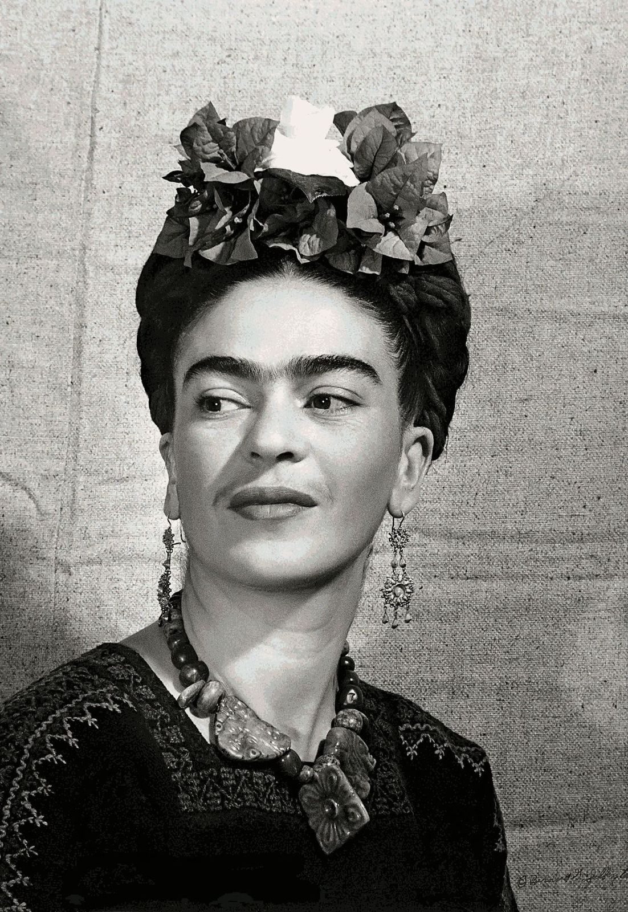
Lutou pela liberdade de expressão das mulheres através da arte.
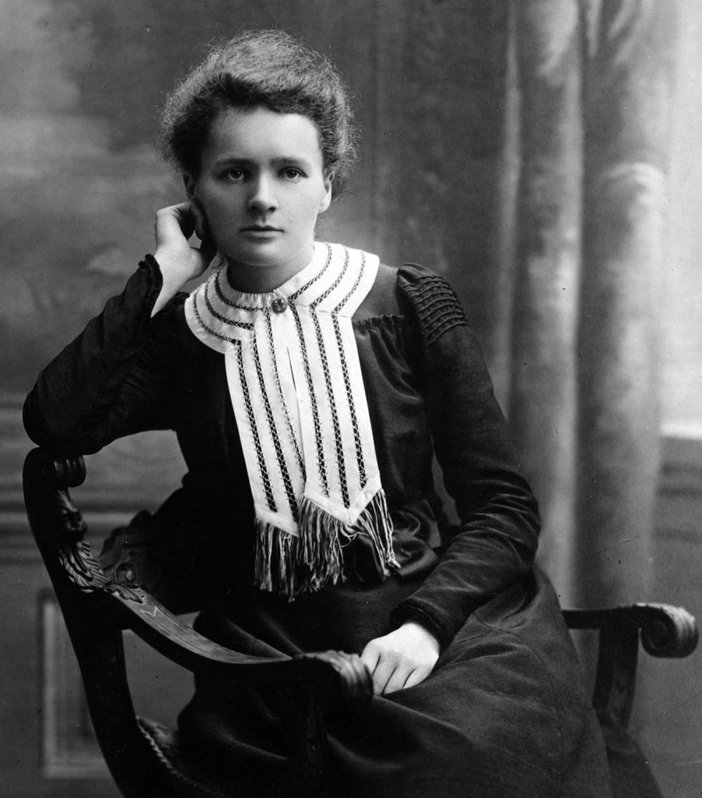
Foi uma cientista importante para o estudo da radioatividade
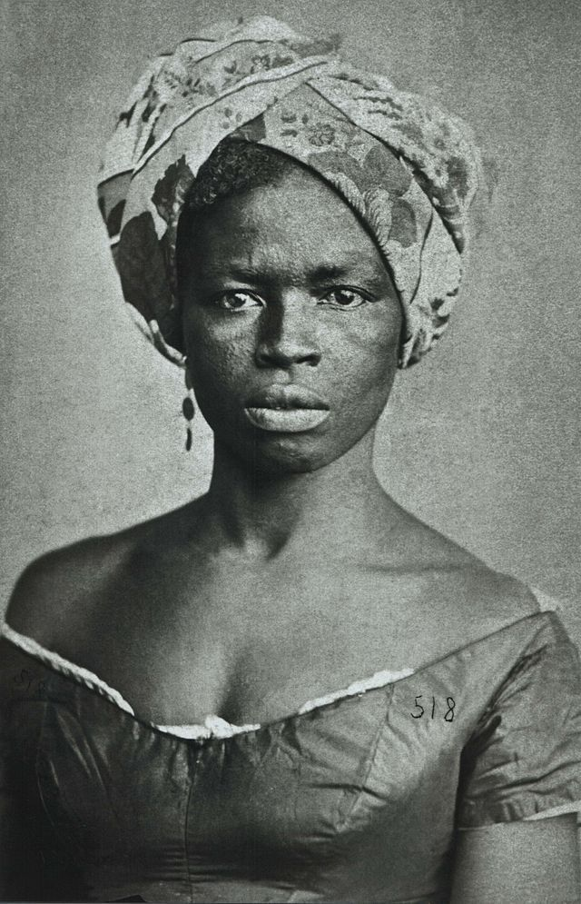
Lutou contra a escravidão e pela liberdade dos negros.
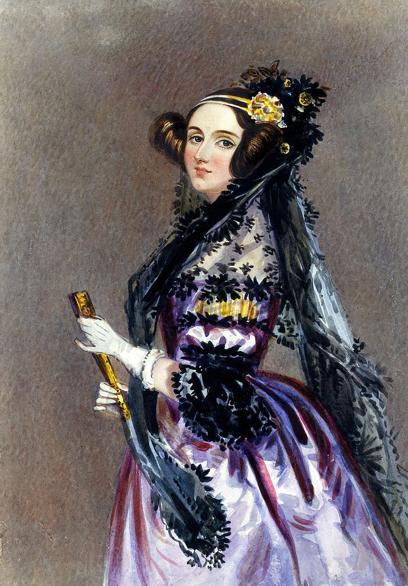
Foi uma das primeiras mulheres a trabalhar com programação.
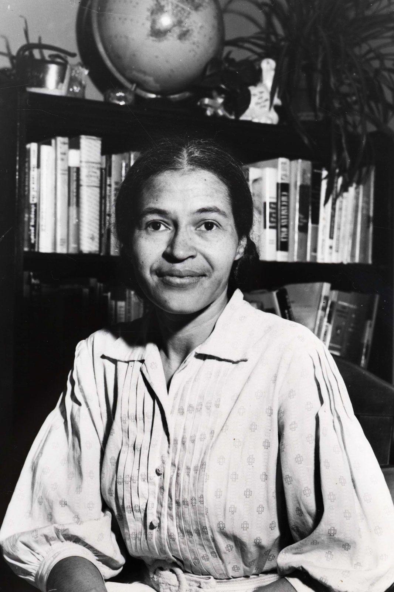
Lutou contra o racismo e a segregação nos Estados Unidos.
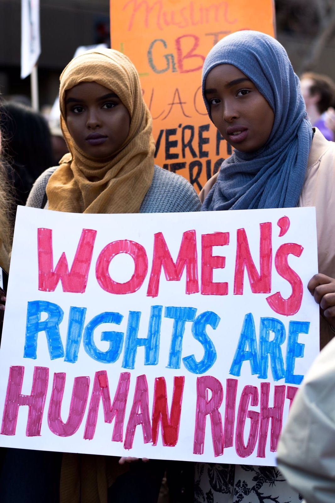